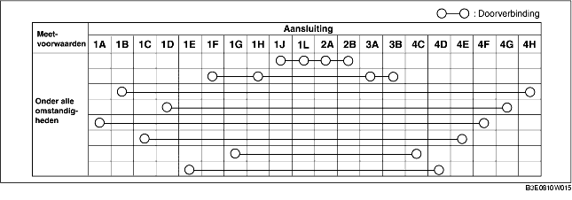
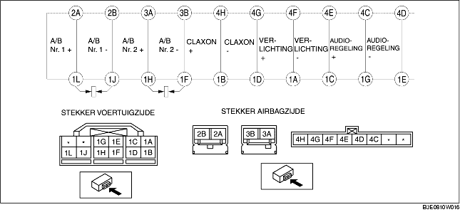

CONTROLE SPIRAALKABEL
B3E081066123W03
1. Verwijder de spiraalkabel. (Zie VERWIJDEREN/PLAATSEN SPIRAALKABEL.)
2. Controleer of de doorverbinding is zoals in de tabel is aangegeven.
-
• Vervang de spiraalkabel als de doorverbinding niet is zoals in de tabel is aangegeven.
-
Aanwijzing
-
• Wanneer de stekker aan voertuigzijde van de spiraalkabel wordt losgenomen, worden aansluiting 1F, 1H, 1J en 1L kortgesloten om te voorkomen dat de airbag onverwachts wordt geactiveerd.

